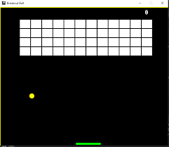

Brick Breaker Game
Brick Breaker
The game's objective is to eliminate all of the BRICKS at the top of the screen by hitting them with the BALL. But, if the ball hits the bottom ENCLOSURE, the player loses and the game ends! To win the game, all the BRICKS must be eliminated.
